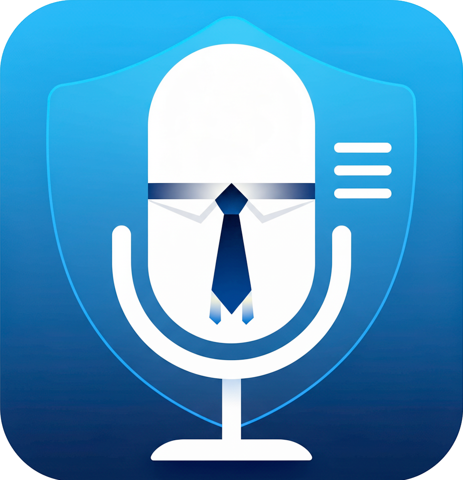

Turn endless Town Halls into clean transcripts. Local recording & AI transcription for Mac.
Email: ninilich@tuta.io
Please include: macOS version, Apple Silicon model (M1+), app version, recording details, and error messages.
Tired of endless Town Halls and all-hands meetings dragging on forever? BoringMeeting captures Teams/Zoom/etc. or any system audio locally on your Mac. Get clean, accurate transcripts—no fluff, no cloud nonsense.
Record from MS Teams, Google Meet, Zoom, web browser, any app. AI transcription runs offline—nothing leaves your Mac.
Start/stop with one click. Get plain text transcripts. No accounts, no cloud overhead.
Email ninilich@tuta.io with your setup details. We respond within 24 hours.
Made for Apple Silicon Macs • 100% Local Processing • No Cloud Required